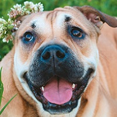
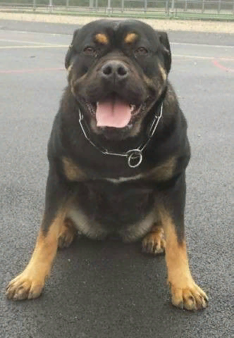

Ка-де-бо

Оценка породы:
Ум
Линька
Популярность
Охранные качества
Игровая активность
Сторожевые качества
Дружелюбность к детям
Склонность к дрессировке
Характеристика породы
Краткое описание
Условия содержания:
Дом с большим садом, вольер, придомовая территория, квартира
Длина шерсти:
Короткая
Размер взрослой собаки:
Рост самок – 52-55 см, самцов 55-58 см,
вес самцов примерно 35-38 кг, самок – 30-34 кг
вес самцов примерно 35-38 кг, самок – 30-34 кг
Средняя продолжительность жизни:
12-14 лет
Выгул:
Обязателен выгул даже при уличном содержании (1-2 раза)
Потребность в физической нагрузке:
Высокие потребности в физической нагрузке (ежедневные тренировки, прогулки по 1.5-2 часа, активны игры)
Стоимость щенка:
От 15000 до 60000 рублей
Фото взрослой собаки


Стоимость щенков
Без родословной – 15000 рублей.
Пет-класс – 20000-25000 рублей.
Брид-класс – до 40000 рублей.
Шоу-класс – 60000 рублей.
Особенности характера и поведения
Взрослые псы могут показаться ленивыми или вальяжными, они редко пытаются привлечь внимание, зачастую, таких собак не видно в доме. Ка де Бо спокойные, уравновешенные и независимые.
Но чтобы получить такого питомца, нужно тщательно работать над его характером, тренировать и воспитывать. В обратном случае пес может стать агрессивным, озлобленным и упрямым. Мастифам не нравятся чужаки, но к хозяевам и своей семье они относятся с трепетом и любовью.
Достоинства
Высокий интелект (порода легко дрессируется, собаки быстро запоминают команды);
Независимость (в критических ситуациях Ка де Бо может самостоятельно принять решение);
Охранные инстинкты (идеально подходят для защиты имущества);
Врожденная крепость мускулатуры и хорошая физическая форма;
Уравновешенность, спокойствие, флегматичность;
Любовь к детям;
Преданность семье;
Несмотря на нелюбовь к другим животным и незнакомцам, собаки сдержаны.
Ка де Бо становится идеальным защитником и преданным другом.
Он любит своих близких, рад позабавиться, поиграть на свежем воздухе.
Но многие владельцы отмечают их бесшумность, незаметность в условиях квартиры.
Недостатки
Специалисты считают, что у этой породы недостатков нет.
Редко отмечается повышенная агрессивность, чаще из-за неправильной работы по разведению или некорректного воспитания.
Так или иначе, характер собаки зависит от многих факторов и формируется на протяжении всей ее жизни.
Основные недостатки:
Упрямство (подчинится только тому хозяину, который сможет проявить силу характера);
Необходимость в воспитании и постоянных тренировках;
Нестабильность поведения от особи к особи.
Уход и содержание
Порода не проблемная, как истинная рабочая собака, Ка де Бо не требует тщательного ухода.
Важно следить за поведением, правильно воспитывать
щенка, давать ему нужную физическую нагрузку, упражнения на развитие интеллекта.
Хозяину надо наладить контакт с любимцем, иначе тренировки не принесут нужного результата.
Питание
Ка-де-Бо аллергики, кроме этого у них слабый желудок и пищеварительная система.
К разработке меню нужно подойти со всей ответственностью.
Владельцу стоит обсудить с заводчиком рацион щенка, определить, чем лучше кормить питомца.
Готовые продукты комплексные, включают все нужные витамины и микроэлементы.
Они просты в использовании, хранении, транспортировке.
Но некачественные корма могут навредить животному, ударить по печени и желудку, вызвать аллергию.
В состав не должны входить злаки, идеально 30-40% содержания мяса (не субпродуктов).
Ка де бо подойдет супер-премиум корм для крупных собак с активным образом жизни.
Лучше выбирать среди линейки гипоаллергенных или лекарственных продуктов.
Режим питания полностью зависит от возраста собаки.
После отлучки от материнского молока животное прикармливают 6 раз в день жидкими бульонами, кефиром.
В 4-5 месяцев приемы пищи сокращают до 5-ти.
К полугоду щенок должен кушать 3 раза, а к году 1-2 раза в день.
Объем дневного корма для взрослого питомца – 0.8-1.2 кг пищи.
Он может изменяться в зависимости от активности и образа жизни пса.
Категорически запрещено кормить питомца со стола, давать жирную жареную пищу, кости, сладкое и мучное.
Не рекомендуется включать в меню картофель, бобовые, разнообразие злаковых культур.
Здоровье
Это сильные и выносливые собаки, которые живут от 12 до 15 лет, несмотря на большие размеры.
Их иммунитет вырабатывался долгие годы аборигенной жизни, выживали только сильнейшие псы.
Но человек решил вмешаться в развитие характера животных.
Из-за селекционных работ порода получила несколько тяжелых патологий и заболеваний.
Несмотря на естественный отбор и длительное отсутствие селекционной работы,
Ка де Бо получили несколько характерных породных заболеваний:
Дисплазия тазобедренных и локтевых суставов
(развивается из-за чрезмерной нагрузки на конечности, лишнего веса и отсутствия правильных тренировок);
Патологические заболевания печени
(могут развиваться до цирроза, на это влияет питание и образ жизни собаки);
Воспаления тканей скелета (миозит);
Слабый желудок и проблемы с пищеварением (диарея, рвота, расстройство);
Из-за слабого иммунитета есть риск развития демодекоза;
Онкология (у пожилых животных).
Выгул
Обычно таких крупных животных содержат только в вольерных или уличных условиях (во дворе дома).
В этом случае питомцу хватит одноразового выгула (1-1.5 часа).
Если собака не имеет возможности самостоятельно бегать по свободной территории,
то прогулки нужно продлить до 2-х часов и увеличить до 2-х раз в день.
Щенков этой породы нельзя нагружать прыжками и спусками по лестницам до 4-5 месяцев.
Из-за особенностей строения позвоночника и костной системы
есть риск заработать дисплазию суставов, что испортит качество жизни питомца.
До второго прививания малышей выносят на улицу на руках, знакомят с окрестностями.
После вакцинации и выдержанного карантина нагрузки распределяют по 10-15 минут на весь день.
Важно знакомить щенка с другими животными, приучать к шумным магистралям, общественному транспорту, незнакомым людям.
Уход за шерстью
У Ка де Бо короткая шерсть, поэтому особого ухода не потребуется.
Купают крупных собак не чаще 2-х раз в год, при сильных загрязнениях обтирают влажным полотенцем.
Эти животные линяют круглый год, но особо интенсивно в межсезонье.
Рекомендуют удалять волоски ежедневно с помощью щетки-перчатки, а ежемесячно интенсивно вычесывать мягкой расческой.
Важно чистить зубы собаке не реже 1-го раза в неделю, можно использовать раствор перекиси (3%),
покупные лакомства (канатики, палочки). Осматривать уши и слизистые надо каждые 2-3 дня, складки отчищать от соринок и пыли.
Когти подстригают каждые 3-4 недели, если они не стачиваются об асфальт.
В мероприятия по уходу стоит вписать обработку от блох и клещей.
Обычно ее проводят 1 раз в 3 месяца (как и очищение от глистов),
но в летнее время и теплые сезоны нужно обрабатывать животное ежемесячно.
Видео о породе